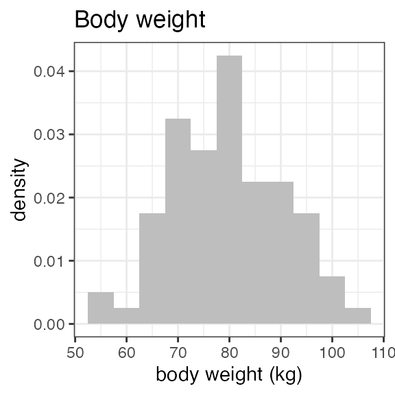
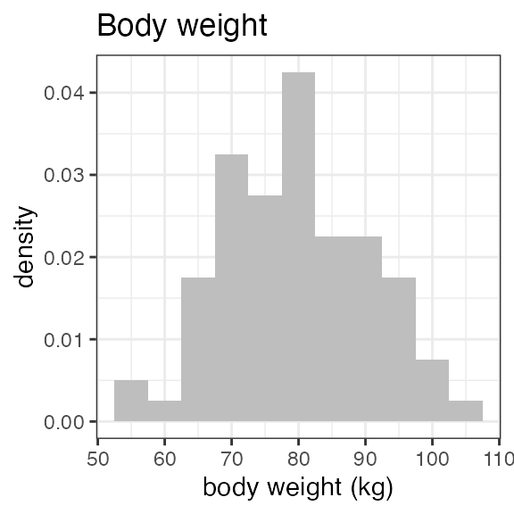
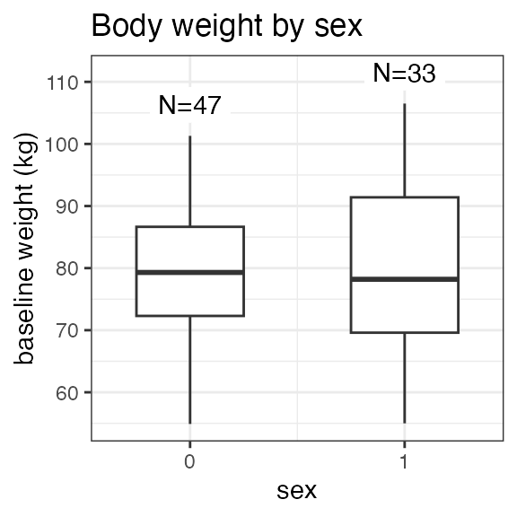
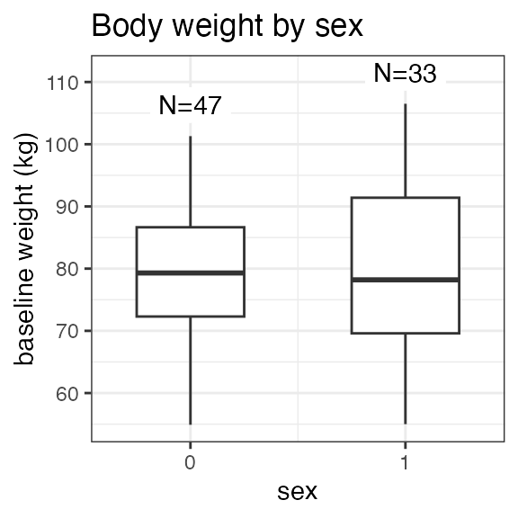
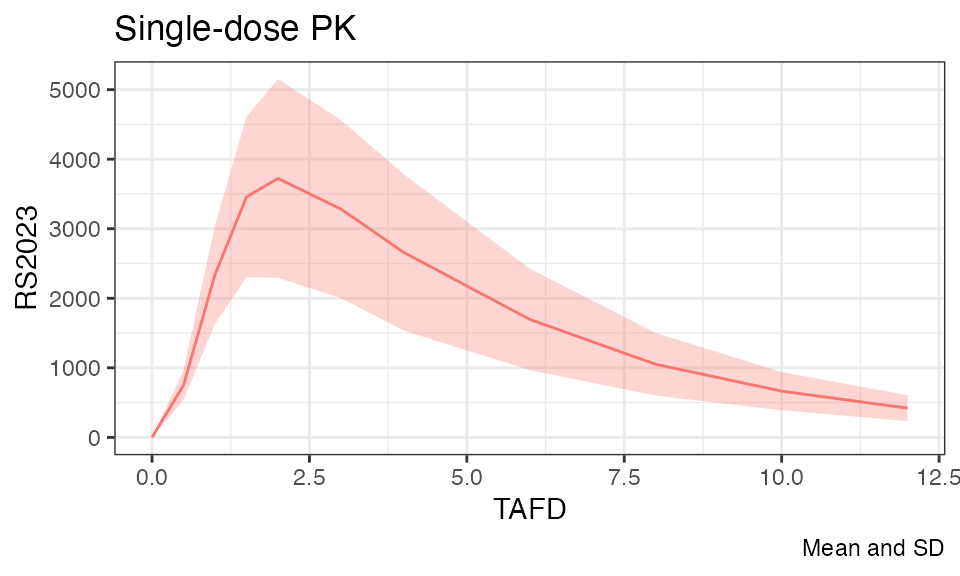

NIF data for a multiple-dose study
Source:vignettes/multiple-dose-example.Rmd
multiple-dose-example.RmdOVERVIEW
This vignette walks through the creation of a NONMEM input file (NIF) data set for a prototypical multiple dose study (study ‘RS2023-0022’), followed by some basic exploratory analyses.
The (fictional) raw study data are included as part of the NIF
package as examplinib_poc. Custom SDTM data can be loaded
using read_sdtm().
Study design
Study ‘RS2023-0022’ is a single-arm study in which subjects received multiple doses of ‘examplinib’ (substance code ‘RS2023’). The treatment duration is different across subjects. PK sampling was on Days 1 and 8 of the treatment period. The PK sampling schedule was rich in the initial subset of subjects and sparse in the others.
Study SDTM data
The package provides the ‘sdtm’ class as a wrapper to keep all SDTM
domain tables of a clinical study together in one object. The
examplinib_poc sdtm object contains the DM, EX, PC and VS
domains. Let’s print the examplinib_poc sdtm object for a
high-level overview:
examplinib_poc
#> -------- SDTM data set summary --------
#> Study 2023000022 with 80 subjects providing PC data.
#>
#> Subjects per domain:
#> DOMAIN N
#> dm 103
#> vs 103
#> ex 80
#> pc 80
#> lb 103
#> pp 13
#>
#> Arms (DM):
#> ACTARMCD ACTARM
#> TREATMENT Single Arm Treatment
#> SCRNFAIL Screen Faillure
#>
#> Treatments (EX):
#> EXAMPLINIB
#>
#> PK sample specimens (PC):
#> (none)
#>
#> PK analytes (PC):
#> PCTEST PCTESTCD
#> RS2023 RS2023
#> RS2023487A RS2023487A
#>
#> Treatment-to-analyte mappings:
#> EXTRT PCTESTCD ANALYTE
#> EXAMPLINIB RS2023 RS2023
#>
#> Parent-to-metabolite mappings:
#> PCTESTCD_parent PCTESTCD_metab
#> RS2023 RS2023487ANote that in the EX domain, the administered drug is given as ‘EXAMPLINIB’ while in PC, the corresponding analyte is ‘RS2023’. The other analyte, ‘RS2023487A’ is a metabolite.
To clearly specify these correlations, the SDTM object includes the
fields examplinib_poc$analyte_mapping and
examplinib_poc$metabolite_mapping. Both can be defined when
the SDTM data set is created. See the documentation to
add_analyte_mapping() and
add_metabolite_mapping() for details.
For this SDTM object, both mappings have been added already.
CREATING A NIF DATA SET
To enable more complex analyses and analyses in the time domain, the
data from different SDTM domains must be integrated into a single data
frame in long table format. For modeling analyses, a common format
specification is the NONMEM input file (NIF) format that is at the core
of the nif package.
nif objects are minimally composed from administrations
and observations. Following the NONMEM nomenclature, the former have an
‘EVID’ of 1, the latter an ‘EVID’ of 0. In the following code, an empty
nif object is created using new_nif(), to which
‘EXAMPLINIB’ administrations are then added using
add_administration(). Note that the analyte field for this
drug is set to ‘RS2023’. In a second step, pharmacokinetic
concentrations for ‘RS2023’ are added from the ‘PC’ SDTM domain. To
match the administration, the analyte field is again ‘RS2023’. The
compartment is automatically set to 2. Both functions have as their
first arguemt the ‘sdtm’ object:
sdtm <- examplinib_poc
nif_poc <- new_nif() %>%
add_administration(sdtm, extrt = "EXAMPLINIB", analyte = "RS2023") %>%
add_observation(sdtm, domain = "pc", testcd = "RS2023", analyte = "RS2023")
#> Compartment for RS2023 was not specified and has been set to 2The ‘LB’ domain within this sdtm object contains baseline creatinine data which can be used to calculate the individual baseline creatinine clearance as an estimate for glomerular filtration rate (eGFR). Baseline covariates are created using ’add_baseline()`.
In the first step, baseline creatinine is added from ‘LB’, and then the creatinine clearance is calculated using further demographic parameters (sex, age, race, weight). The standard method is Cockcroft-Gault but other methods can be specified:
nif_poc <- nif_poc %>%
add_baseline(sdtm, domain = "lb", testcd = "CREAT") %>%
add_bl_crcl()In fact, the nif data set that we have just created, including the
baseline creatinine clearance data, is already included in the
nif package as examplinib_poc_nif.
In case NIF data sets have been generated externally, they can be
converted into nif objects using new_nif(), see the
documentation to this function for details.
Note that a nif object is essentially a wrapper around a data frame with the set of variables expected by NONMEM or other population analysis tools. This becomes visible when the object is converted into a data frame:
nif_poc %>%
as.data.frame() %>%
head()
# REF ID STUDYID USUBJID AGE SEX RACE HEIGHT WEIGHT BMI
# 1 1 1 2023000022 20230000221070001 73 0 WHITE 177.8 83.3 26.35005
# 2 2 1 2023000022 20230000221070001 73 0 WHITE 177.8 83.3 26.35005
# 3 3 1 2023000022 20230000221070001 73 0 WHITE 177.8 83.3 26.35005
# 4 4 1 2023000022 20230000221070001 73 0 WHITE 177.8 83.3 26.35005
# 5 5 1 2023000022 20230000221070001 73 0 WHITE 177.8 83.3 26.35005
# 6 6 1 2023000022 20230000221070001 73 0 WHITE 177.8 83.3 26.35005
# DTC TIME NTIME TAFD TAD PCELTM EVID AMT ANALYTE CMT
# 1 2000-12-29 09:07:00 0.000 0.0 0.000 0.000 <NA> 1 500 RS2023 1
# 2 2000-12-29 09:07:00 0.000 0.0 0.000 0.000 PT0H 0 0 RS2023 2
# 3 2000-12-29 10:17:00 1.167 0.5 1.167 1.167 PT0.5H 0 0 RS2023 2
# 4 2000-12-29 10:46:00 1.650 1.0 1.650 1.650 PT1H 0 0 RS2023 2
# 5 2000-12-29 11:17:00 2.167 1.5 2.167 2.167 PT1.5H 0 0 RS2023 2
# 6 2000-12-29 11:47:00 2.667 2.0 2.667 2.667 PT2H 0 0 RS2023 2
# PARENT TRTDY METABOLITE DOSE DV MDV ACTARMCD
# 1 RS2023 1 FALSE 500 NA 1 TREATMENT
# 2 RS2023 1 FALSE 500 0.0000 0 TREATMENT
# 3 RS2023 1 FALSE 500 660.6079 0 TREATMENT
# 4 RS2023 1 FALSE 500 1361.6798 0 TREATMENT
# 5 RS2023 1 FALSE 500 2139.0566 0 TREATMENT
# 6 RS2023 1 FALSE 500 2819.4098 0 TREATMENT
# IMPUTATION BL_CREAT BL_CRCL
# 1 admin time imputed from PCRFTDTC 77.8169 74.84876
# 2 77.8169 74.84876
# 3 77.8169 74.84876
# 4 77.8169 74.84876
# 5 77.8169 74.84876
# 6 77.8169 74.84876When the NIF object itself is printed, a summary of the data is shown instead:
nif_poc
# ----- NONMEM input file (NIF) object -----
# RS2023 data from one study
# 672 observations from 80 subjects
# Males: 46, females: 34 (42.5%)
#
# Columns:
# REF, ID, STUDYID, USUBJID, AGE, SEX, RACE, HEIGHT, WEIGHT, BMI, DTC, TIME, NTIME, TAFD, TAD, PCELTM, EVID, AMT, ANALYTE, CMT, PARENT, TRTDY, METABOLITE, DOSE, DV, MDV, ACTARMCD, IMPUTATION, BL_CREAT, BL_CRCL
#
# NIF data (selected columns):
# ID NTIME TIME TAD ANALYTE EVID CMT AMT DOSE DV
# 1 0 0 0 RS2023 1 1 500 500 NA
# 1 0 0 0 RS2023 0 2 0 500 0
# 1 0.5 1.167 1.167 RS2023 0 2 0 500 660.608
# 1 1 1.65 1.65 RS2023 0 2 0 500 1361.68
# 1 1.5 2.167 2.167 RS2023 0 2 0 500 2139.057
# 1 2 2.667 2.667 RS2023 0 2 0 500 2819.41
# 1 3 3.633 3.633 RS2023 0 2 0 500 2125.782
# 1 4 4.533 4.533 RS2023 0 2 0 500 1986.097
# 1 6 6.733 6.733 RS2023 0 2 0 500 842.133
# 1 8 8.567 8.567 RS2023 0 2 0 500 526.231
# 6972 more rowsEXPLORATION
Demographics
For an initial overview on the distribution of baseline parameters,
the administered drugs, analytes, observations, etc., NIF objects can be
inspected with the summary() function. Note that since we
have added baseline eGFR to the data set, the output also summarizes the
number of patients with normal renal function or impaired renal
function:
summary(nif_poc)
# ----- NONMEM input file (NIF) object summary -----
# Data from 80 subjects across one study:
# STUDYID N
# 2023000022 80
#
# Males: 46, females: 34 (42.5%)
#
# Renal impairment class:
# CLASS N
# mild 35
# moderate 13
# normal 32
#
# Administered drugs:
# RS2023
#
# Administered drugs:
# RS2023
#
# Analytes:
# RS2023
#
# Subjects per dose levels:
# RS2023 N
# 500 80
#
# 672 observations:
# CMT ANALYTE N
# 2 RS2023 672
#
# Subjects with dose reductions
# RS2023
# 27
#
# Treatment duration overview:
# PARENT min max mean median
# RS2023 53 98 78.9 81For a visual overview of the NIF data set plot() can be
applied to the summary:
 



 

Exposure
In this study, all 80 subject received the same dose level:
nif_poc %>%
dose_levels() %>%
kable(caption="Dose levels")| RS2023 | N |
|---|---|
| 500 | 80 |
However, there were subjects with dose reductions, as we can see when filtering the nif data set for EVID == 1 (administrations) and summarizing the administered dose:
| DOSE | n |
|---|---|
| 250 | 1198 |
| 500 | 5112 |
To identify the subjects with dose reductions:
nif_poc %>%
dose_red_sbs()
# [1] 1 3 14 28 29 30 35 38 47 48 50 52 54 56 57 58 59 62 64 67 68 70 71 72 74
# [26] 77 79Let’s have a plot of the doses over time in these subjects:
nif_poc %>%
filter(ID %in% (nif_poc %>% dose_red_sbs())) %>%
filter(EVID == 1) %>%
ggplot(aes(x = TIME, y = DOSE, color = as.factor(ID))) +
geom_point() +
geom_line() +
theme(legend.position="none") 
We see that dose reductions happended at different times during
treatment. Another way of visualizing this is per the
mean_dose_plot() function:
nif_poc %>%
mean_dose_plot()
The upper panel shows the mean dose over time, and we can see that after ~Day 13, the mean dose across all treated subjects drops due to dose reductions in some subjects. To put this into context, the lower panel shows the number of subjects on treatment over time, and we see that most subjects had treatment durations of around 30 days. Note the fluctuations that indicate single missed doses in individual subjects!
PK sampling
The PK sampling time points in this study were:
nif_poc %>%
filter(EVID == 0) %>%
group_by(NTIME, ANALYTE) %>%
summarize(n = n(), .groups = "drop") %>%
tidyr::pivot_wider(names_from = "ANALYTE", values_from = "n") %>%
kable(caption = "Observations by time point and analyte")| NTIME | RS2023 |
|---|---|
| 0.0 | 160 |
| 0.5 | 24 |
| 1.0 | 24 |
| 1.5 | 160 |
| 2.0 | 24 |
| 3.0 | 24 |
| 4.0 | 160 |
| 6.0 | 24 |
| 8.0 | 24 |
| 10.0 | 24 |
| 12.0 | 24 |
From the different numbers of samplings per nominal time point, we see that only a subset of subjects had a rich sampling scheme. Let’s identify those:
nif_poc %>%
rich_sampling_sbs(analyte = "RS2023", max_time = 24, n = 6)
# [1] 1 2 3 4 5 6 7 8 9 10 11 12In this code, the function rich_sampling_sbs() receives
as input the analyte of interest, the time interval across which the
number of sanmples is evaluated, and the minimum number of samples to
qualify the schedule as rich.
Plasma concentration data
Let’s plot the individual and mean plasma concentration profiles on Day 1 for the parent, RS2023, and the metabolite, RS2023487A:
temp <- nif_poc %>%
filter(ID %in% (rich_sampling_sbs(nif_poc, analyte = "RS2023", n=4)))
temp %>% plot(dose = 500, points = TRUE, title = "Rich sampling subjects")
For single and mutliple dose administrations separately:
temp <- temp %>%
index_rich_sampling_intervals()
temp %>% filter(RICH_N == 1) %>%
plot(analyte = "RS2023", mean = TRUE, title = "Single-dose PK")
temp %>% filter(RICH_N == 2) %>%
plot(analyte = "RS2023", title = "Multiple-dose PK", time = "NTIME", mean = T)
Non-compartmental analysis
nca <- examplinib_poc_nif %>%
index_rich_sampling_intervals(analyte = "RS2023", min_n = 4) %>%
nca("RS2023", group = "RICH_N")
nca %>%
nca_summary_table(group = "RICH_N") %>%
kable()| RICH_N | DOSE | n | aucinf.obs | auclast | cmax | half.life | tmax |
|---|---|---|---|---|---|---|---|
| 1 | 250 | 2 | 10189.8 (35) | 9963.92 (33) | 2920.08 (5) | 2.05 (12) | 2.67 (2.67; 2.67) |
| 1 | 500 | 12 | 9433.11 (29) | 9285.59 (28) | 2882.56 (19) | 2.05 (26) | 2.61 (1.98; 2.95) |
| 2 | 250 | 2 | 10841.58 (41) | 10590.38 (39) | 2638.01 (7) | 1.83 (27) | 2.65 (2.65; 2.65) |
| 2 | 500 | 12 | 9475.41 (28) | 9283.83 (27) | 2667.08 (15) | 1.87 (30) | 2.5 (1.75; 3.58) |
| NA | 250 | 9 | NaN (NA) | NA | NA | NaN (NA) | NA |
| NA | 250 | 59 | NA | 4887.73 (134) | NA | NA | NA |
| NA | 250 | 216 | NA | NA | 2688.3 (19) | NA | 97.96 (1.67; 218.45) |
| NA | 500 | 31 | NaN (NA) | NA | NA | NaN (NA) | NA |
| NA | 500 | 166 | NA | 4347.04 (178) | NA | NA | NA |
| NA | 500 | 605 | NA | NA | 2139.28 (157) | NA | 97.7 (1.63; 218.45) |